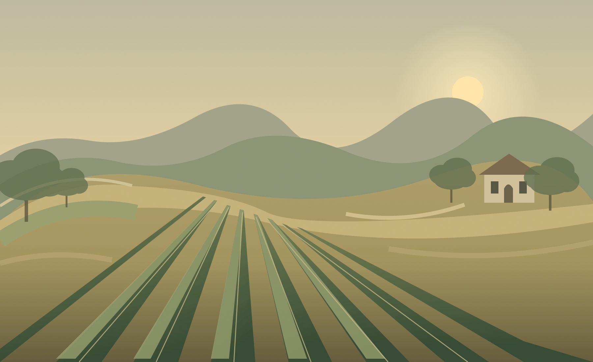

CELLAR & STONEC&SStonecropCABERNET SAUVIGNON
2021
2021
Stonecrop Cabernet Sauvignon
2021 · ESTATE RESERVE
$48Tasting notes ↗
SONOMA COUNTY · ESTATE GROWN SINCE 1978
Forty acres of dry-farmed cabernet and chardonnay above the Russian River.
Tastings by reservation, seven days a week.
OUR PHILOSOPHY
— Elena Marchetti, Winemaker
THE COLLECTION
2021 · ESTATE RESERVE
$48Tasting notes ↗2023 · UNOAKED
$34Tasting notes ↗2020 · BLOCK 7
$52Tasting notes ↗2024 · LIMITED
$28Tasting notes ↗2019 · LIBRARY RELEASE
$68Tasting notes ↗2022 · DESSERT · 375ML
$38Tasting notes ↗Illustrated collection and brief-based prices. No online sales or live stock.
TASTING NOTES
Place, season, and a little patience.
Aroma Black cherry, cedar, dried thyme.
Palate Firm but rounded tannin, graphite, long dark-fruit finish.
Pairing Dry-aged beef, aged hard cheeses, mushroom ragù.
Aroma White peach, lemon peel, wet stone.
Palate No oak, bright acid, saline finish.
Pairing Oysters, roast chicken, anything from the grill.
Aroma Raspberry, black pepper, brambles.
Palate Full and spicy without heat, soft tannin.
Pairing Barbecue, lamb, sharp cheddar.
Aroma Strawberry, blood orange, rose petal.
Palate Dry, crisp, faintly savoury.
Pairing Salads, charcuterie, hot afternoons.
Aroma Cassis, tobacco leaf, violet.
Palate Structured and slow-opening, built for another decade.
Pairing Decant an hour, then anything worth the occasion.
Aroma Apricot, honeycomb, orange blossom.
Palate Sweet but balanced by acid, not cloying.
Pairing Blue cheese, stone fruit tart, on its own.
VISIT US
45 minutes · Five current-release pours at the bar. Walk-ins welcome before 3pm in the brief.
90 minutes · Six wines, local cheese and bread, and a reserved terrace table.
2 hours · Walk the blocks with a winemaker. Saturdays only; up to eight guests.
Open daily 11am–5pm · Last tasting seated at 4pm.
Groups of eight or more: (707) 555-0142.
WINE CLUB
A place at our table. A piece of our hillside.
4 shipments / year · 3 bottles
$105 / shipment4 shipments / year · 6 bottles
$195 / shipment2 shipments / year · 12 bottles
$520 / shipmentMembers receive complimentary tastings for two, all year. Skip or cancel before shipment in the illustrative offer.
ONE HILLSIDE. THREE COMMITMENTS.
Forty acres on a west-facing slope of decomposed shale, planted between 1978 and 1994. Thin soil and no irrigation mean small berries, deep colour, and low yields.
Dry-farmed and certified organic since 2006 in the brief. Cover crops between rows, sheep through winter, and hand picking before sunrise.
Native fermentation in concrete and neutral oak. Minimal handling, no fining, light filtration only when needed. Eleven degrees, year-round.
FIELD NOTES
Three dry years taught us more about this hillside than the twenty before them. In this concept, lower yields are a deliberate trade for a clearer expression of place.
A cool August pushed picking back eleven days. This short editorial preview illustrates the estate journal rather than reporting a verified harvest.
Oak is a seasoning, not a food group. North Block keeps the focus on white peach, lemon peel and wet stone.
THE TERRACE IS WAITING
The terrace is open daily, the dog is friendly,
and the last tasting sits at four.
Local planning tool only. No live availability or reservation.
Brief phone: (707) 555-0142.